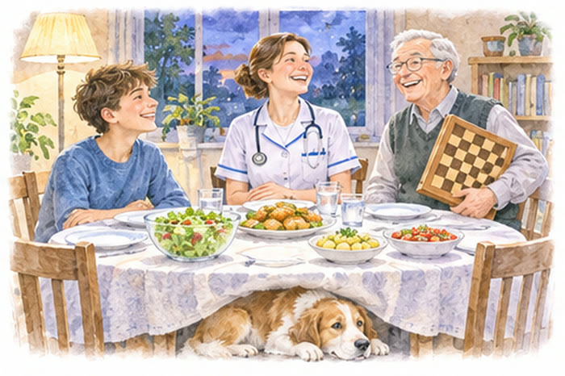

Listen to the text
Speed:

What does an ordinary Wednesday look like? It depends on who you are. Our class compared the day of three people. Maksym, 14, a student. "I get up at seven and leave home at half past seven. I have six lessons. At three I have lunch at home and take the dog for a walk. From four to six I do my homework. Then I have football training three times a week. In the evening I chat with my friends and watch videos. I go to bed at eleven. The busiest part of my day is from four to six." His mother, Iryna, 41, a nurse. "I get up at half past five. I make breakfast for the family and leave at half past six. I work at the hospital from seven to seven. I am on my feet almost all the time. I come home at eight, cook dinner and check Maksym's homework. I read for twenty minutes before sleep. It is my time. I have one day off after each shift, and then I do the washing and the shopping." His grandfather, Petro, 70, retired. "I wake up at five without an alarm. I do my exercises on the balcony. I have breakfast and go to the market. In the afternoon I play chess in the park with my friends. I pick up my youngest grandson from kindergarten at five. In the evening I watch the news and call my sister. I am never bored. People think that pensioners have nothing to do. I have never been so busy!" Three people, one flat, three different days. They meet at dinner, at eight. It is the best half an hour of the day for all of them.
Tap any sentence to hear it again.
Сподобалось? На сайті ще більше матеріалів для вчителів!
Reader, презентації, ігри, діагностичні та контрольні роботи до підручників 1-11 класів.
Перейти на сайт materials.allaenglish.com